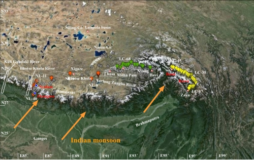
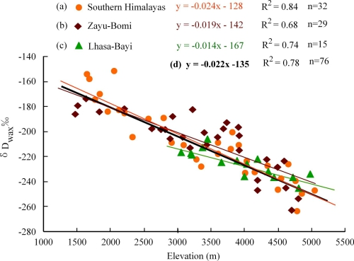
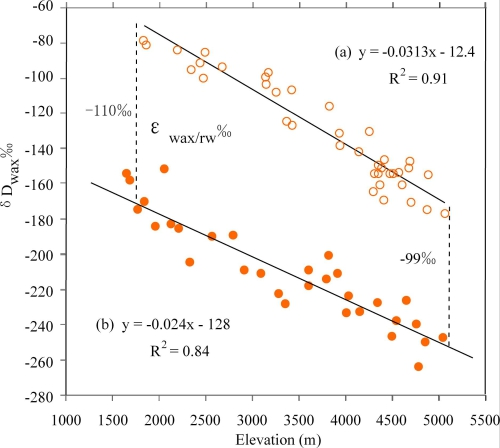
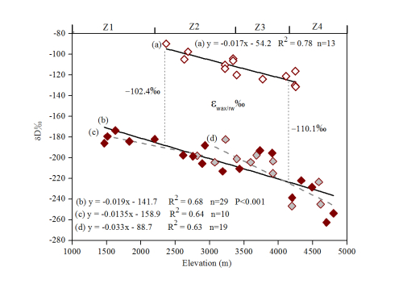
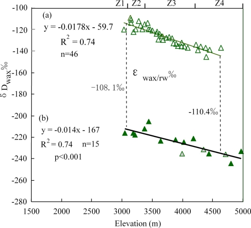

青藏高原的隆升是晚新生代以来全球气候变化的重要驱动因素，同时，也强烈影响了亚洲季风系统的形成和演化。基于目前在青藏高原使用的古高程定量恢复的方法，如: 氧同位素古高程计(
包含热动力学模型和经验模型)、△47 古温度—古高程计、氢同位素古高程计、古植物古高程计(
包含共存分析法、叶相分析法)和古环境分析等，青藏高原定量高程的研究取得了初步的成果。然而，在青藏高原古高度估算中，形成两种不同的观点在尖锐地争议中：其中一个观点是青藏高原到晚中新世的才开始快速隆升并达到目前的高度；另一个主要基于稳定同位素的观点，就是主张青藏高原在印度-亚洲碰撞的早期阶段开始形成并在早第三纪或中新世达到其现代高度。在争论的热点伦坡拉地区,
基于哺乳动物和花粉化石研究的早中新世古高度，要比古土壤碳酸盐和湖相灰岩稳定氧同位素以及叶蜡正构烷烃氢同位素值恢复的古高度结果低1000米。因此,
应用多学科多种高度计综合恢复青藏高原古高度，相互校正，尤其通过现代过程研究，确定和校正气候变化、纬向变化和气团变化等其他因素的影响，以更加可靠的估算青藏高原不同地区古高度变化历史。
高原南部水汽来源水汽来自孟加拉湾和阿拉伯海，并且主要从 85°~95°E一带中的喜马拉雅山中部的某些有利地区涌上高原,
以及从地势较低的高原东部和东南部地区的雅鲁藏布江河谷等地进入高原。中国科学院青藏高原地球科学卓越创新中心方小敏研究员课题组、青藏高原研究所白艳副研究员研究小组选取从喜马拉雅山南坡(1660~5050 m,
代表喜马拉雅南坡气团)，以及组合代表雅鲁藏布江雅鲁藏布江气团的察隅~波密(ZB; 1468~4800 m) 和八一~拉萨高度断面(BL; 3050 ~ 4970
m)，分别建立了各断面表土和植物叶蜡烷烃δDwax、河水δ18O
和δD值的高程递减率，探讨各断面气候参数、传输距离和纬度等主要因素对δDwax及其高程递减率和表观分馏值εwax-p的影响程度。结果表明：虽然在各断面δDwax值及其高度关系有变化，但是，整体上藏东南地区高度仍然是δDwax值的主控因素，其高程递减率为−2.2‰/100m
(R2= 0.78; n=76)。而且，喜马拉雅南坡以及高原南部δDwax 值和河水氢同位素(δDrw)之间的同位素分馏值(εwax/rw)
稳定在−99 和
–110‰之间（均值为–104.5‰)，证明了河水(代表降水)同位素值的高度效应是控制喜马拉雅南坡以及高原南部δDwax 值高度变化的主要因素，证明δDwax值在这一地区可以作为极具潜力的古高度定量指标。然而，由于各断面气候参数、传输距离和湿气来源、纬度以及山形等因素的影响，不同断面同位素值分布及其高程递减率有明显差异，说明即使在湿润的高原东南部，青藏高原古高度恢复研究需要考虑这些因素的影响。
这一研究成果发表在Geochimicaet Cosmochimica Acta (doi.org/10.1016/j.gca.2015.08.016)上，得到了中国科学院战略性先导专项B
(XDB03020100；稳定同位素高度计重建与古高度估算)和国家自然科学基金(41321061, 41071003 and
41371022)等，以及中国科学院藏东南高山环境综合观测研究站的支持。特别感谢与中国科学院青藏高原徐柏青研究员和田立德研究员多次的重要讨论，以及田立德研究员喜马拉雅南坡河水数据的支持。

图 1. 青藏高原东南部两条水汽通道上表土样品点(彩色)以及河水点(白色).

图2. 喜马拉雅山南坡，以及察隅~波密和八一~拉萨三个高度断面表土叶蜡烷烃δDwax的高度关系.

图3. 喜马拉雅山南坡断面河水δDrw (橘色空心圆点)和表土叶蜡烷烃δDwax (橘色实心圆点) 的高度关系.

图4. 察隅~波密断面河水δDrw (棕色空心菱形点)和表土叶蜡烷烃δDwax (棕色实心菱形点) 的高度关系.

图5. 八一~拉萨高度断面河水δDrw (绿色空心三角)和表土叶蜡烷烃δDwax (绿色实心三角) 的高度关系.